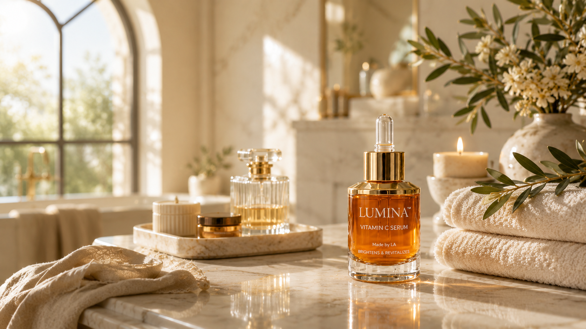
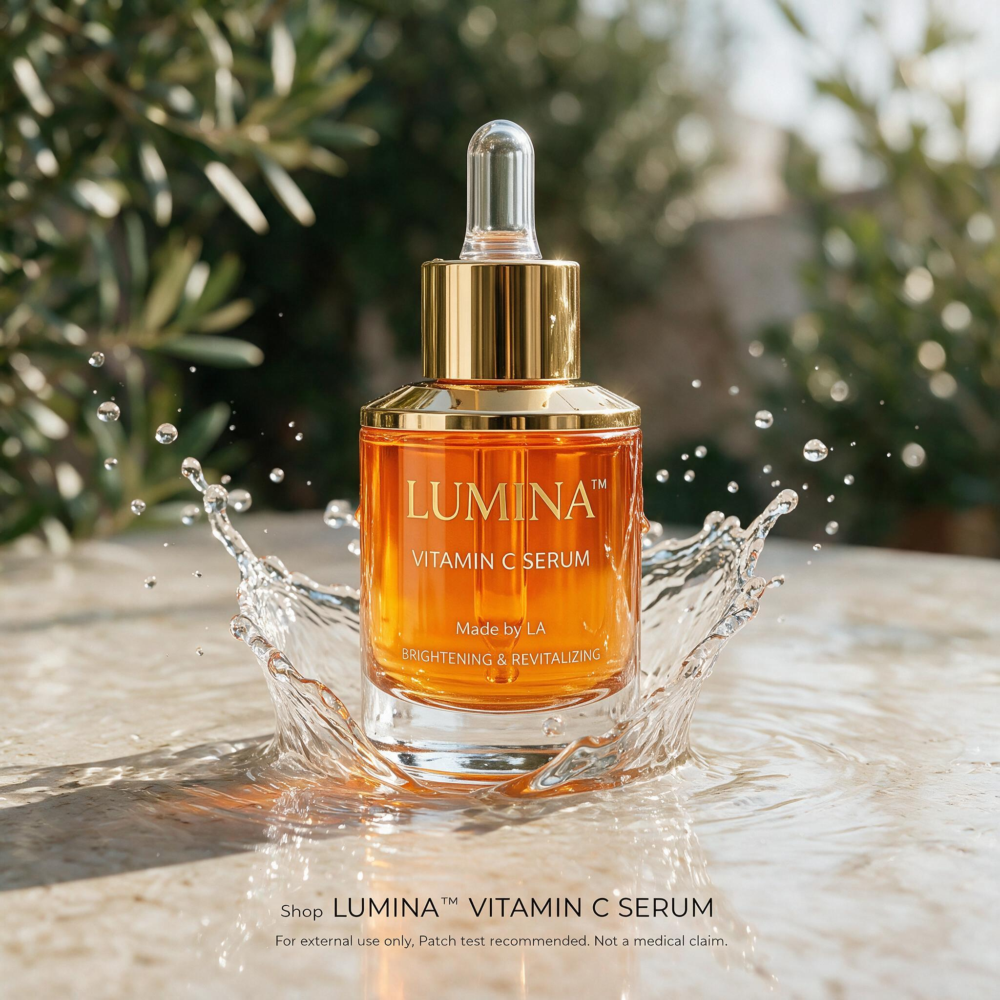

Desire before detail
Lead with the feeling of radiance, then make the product proposition easy to understand.
Luxury Skincare Campaign / Portfolio Case Study
A visual campaign case study exploring how art direction, AI-assisted image creation, and a disciplined brand system can turn a familiar Vitamin C Serum into a composed daily ritual.
Explore the case study
01 Project Overview
LUMINA is a concept-led campaign for a premium Vitamin C Serum. The work takes the familiar promise of glow and gives it a physical language: amber liquid, reflective water, warm stone, and a bottle treated as an object of desire.
The project was conceived as a complete campaign system, able to move from a flagship hero to social and editorial moments without losing its calm, recognisable point of view.
02 The Challenge
Vitamin C campaigns often resolve as either generic clinical proof or high-energy beauty advertising. The challenge was to build a more premium emotional register while keeping the product category, core benefits, and hierarchy clear at every scale.
Lead with the feeling of radiance, then make the product proposition easy to understand.
Use controlled light, material, and whitespace instead of visual density to signal luxury.
Build a coherent system for landscape, square, and vertical formats—not one design cropped repeatedly.
03 Creative Direction
Creative platform

Amber glass, clear water, warm daylight, and quiet surfaces turn the formula into the visual event.
Mood
Skincare is framed as a private, light-filled ritual rather than a loud transformation story.
Light & composition
Directional daylight and reflective marble hold the frame; water creates a controlled moment of energy around the product.
Brand personality
The campaign is luxurious through restraint: fewer elements, resolved material details, and one clear focal point.
04 Brand Guidelines
Every touchpoint returns to a limited set of cues: a product-led palette, editorial serif statements, clear sans-serif utility, and photography that gives the bottle space to command the frame.
Color system
Amber carries the product signature. Gold focuses attention. Ivory leaves space for the story.
Typography
An editorial serif
for the statement.
A clean sans-serif
for clarity and utility.
Contrast, not decoration, creates the hierarchy.
Voice & imagery
Language starts with feeling and lands in a clear benefit. Images pair amber glass with ivory stone, precise water, soft botanicals, and warm directional light.
Visual system
Copy takes the quiet side of the layout. The bottle remains legible. Water frames the product; it never becomes clutter.
05 Prompt Engineering Process
Prompt development began with design constraints, not effects. The goal was to define what belonged in the LUMINA world—and what did not—before creating variations.
Mapped prestige-beauty signals: controlled light, tactile materials, resolved pack shots, and editorial restraint.
Established a narrow material world: amber glass, gold metal, ivory stone, water, and olive-toned botanical depth.
Specified product silhouette, label clarity, natural light direction, negative space, and format-specific composition.
Tested water movement, reflections, backgrounds, and crops while rejecting visual drama that disrupted the brand system.
Curated the frames that held together as a campaign: coherent lighting, legible product, disciplined palette, and clear hierarchy.
06 AI Workflow
AI accelerated exploration across lighting, material behavior, water movement, and format. Art direction made it a campaign: each image was assessed for product scale, label legibility, copy space, light direction, and its relationship to the wider suite.
07 Campaign Showcase
The campaign is presented as an exhibition, not a collage. Each asset takes its own space, showing how the system shifts in format while preserving the same visual signature.
01 / Product Hero
The clearest expression of the product’s visual signature: amber formula, clear dropper, water energy, and immediate category recognition.
02 / Website Hero Banner
The master campaign composition balances editorial headline, concise benefit modules, CTA, and product drama within a single widescreen frame.
03 / Instagram Feed
A compact square treatment designed for fast recognition. The bottle and radiance proposition take priority without abandoning the quiet editorial tone.
04 / Instagram Story
A vertical reveal built around product scale. A centered bottle, generous vertical space, and a bottom-weighted action area make the creative native to the format.
05 / Facebook Sponsored Ad
A performance-oriented landscape adaption that makes category, benefit row, and CTA legible while retaining the campaign’s refined material world.
06 / Lifestyle Editorial
The slowest moment in the suite. A serene spa vignette broadens the product from a beautiful object into a desirable self-care ritual.
08 Results
The finished work demonstrates a cohesive approach to beauty branding across product, editorial, and social communications—showing the thinking behind the imagery as clearly as the imagery itself.
A distinct expression for every relevant format, held together by one visual system.
A documented path from research and constraints through refinement and selection.
Amber glass, gold, water, marble, and warm light create a consistent point of return.
09 Lessons Learned
The strongest creative discovery was that a luxury system does not need more elements; it needs more control. Repeating one product silhouette, one material palette, one quality of light, and one typographic contrast gave the campaign its authority.
Prompt quality improved when it was treated as art direction: defining exclusions, preserving visual hierarchy, and curating outputs against a clear brand world. That structure turned AI exploration into visual storytelling rather than image collection.